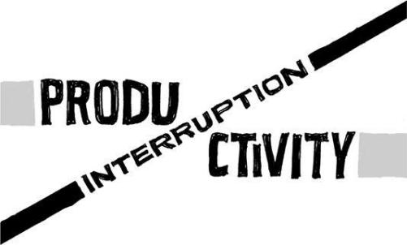

{% include JB/setup %}
{% raw %}
<div>

<h2 id="filepos111405" class="calibre19"><span class="calibre2"><a class="calibre13"></a><strong class="calibre14">Reasons to quit</strong></span></h2><div class="calibre4"></div>
<p class="calibre7">It's easy to put your head down and just work on what you <em class="italic1">think</em> needs to be done. It's a lot harder to pull your head up and ask why. Here are some important questions to ask yourself to ensure you're doing work that matters:</p>
<div class="calibre4"><blockquote class="calibre5"><span class="calibre6">
<p class="calibre7"><strong class="calibre22">Why are you doing this?</strong> Ever find yourself working on something without knowing exactly why? Someone just told you to do it. It's pretty common, actually. That's why it's important to ask why you'reworking on______. What is this for? Who benefits? What's the motivation behind it? Knowing the answers to these questions will help you better understand the work itself.</p>
<p class="calibre11"><strong class="calibre22">What problem are you solving?</strong> What's the problem? Are customers confused? Are you confused? Is something not clear enough? Was something not possible before that should be possible now? Sometimes when you ask these questions, you'll find you're solving an <em class="italic1">imaginary</em> problem. That's when it's time to stop and reevaluate what the hell you're doing.</p>
<p class="calibre11"><strong class="calibre22">Is this actually useful?</strong> Are you making something useful or just making something? It's easy to confuse <a class="calibre16"></a>enthusiasm with usefulness. Sometimes it's fine to play a bit and build something cool. But eventually you've got to stop and ask yourself if it's useful, too. Cool wears off. Useful never does.</p>
<p class="calibre11"><strong class="calibre22">Are you adding value?</strong> Adding something is easy; adding <em class="italic1">value</em> is hard. Is this thing you're working on actually making your product more valuable for customers? Can they get more out of it than they did before? Sometimes things you think are adding value actually subtract from it. Too much ketchup can ruin the fries. Value is about balance.</p>
<p class="calibre11"><strong class="calibre22">Will this change behavior?</strong> Is what you're working on really going to change anything? Don't add something unless it has a real impact on how people use your product.</p>
<p class="calibre11"><strong class="calibre22">Is there an easier way?</strong> Whenever you're working on something, ask, "Is there an easier way?" You'll often find this easy way is more than good enough for now. Problems are usually pretty simple. We just imagine that they require hard solutions.</p>
<p class="calibre11"><strong class="calibre22">What could you be doing instead?</strong> What can't you do because you're doing this? This is especially important for small teams with constrained resources. <a class="calibre16"></a>That's when prioritization is even more important. If you work on A, can you still do B and C before April? If not, would you rather have B and C instead of A? If you're stuck on something for a long period of time, that means there are other things you're not getting done.</p>
<p class="calibre11"><strong class="calibre22">Is it really worth it?</strong> Is what you're doing really worth it? Is this meeting worth pulling six people off their work for an hour? Is it worth pulling an all-nighter tonight, or could you just finish it up tomorrow? Is it worth getting all stressed out over a press release from a competitor? Is it worth spending your money on advertising? Determine the real value of what you're about to do before taking the plunge.</p>
</span></blockquote></div><div class="calibre4"></div>
<p class="calibre17">Keep asking yourself (and others) the questions listed above. You don't need to make it a formal process, but don't let it slide, either.</p>
<p class="calibre17">Also, don't be timid about your conclusions. Sometimes abandoning what you're working on is the right move, even if you've already put in a lot of effort. Don't throw good time after bad work.</p>
<p class="calibre3"><a class="calibre16"></a></p><div class="calibre4"></div>
<div class="mbppagebreak" id="calibre_pb_62"></div></div>

{% endraw %}

